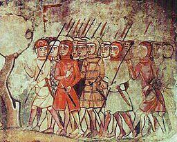
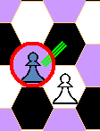
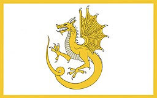
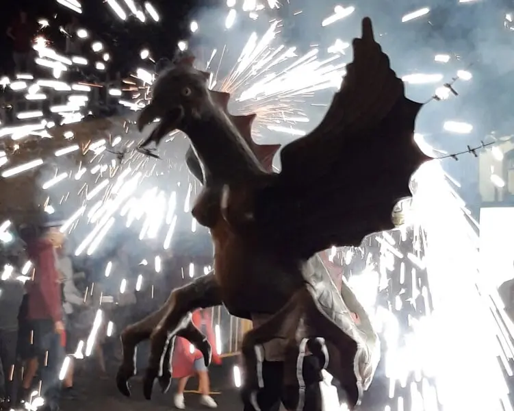
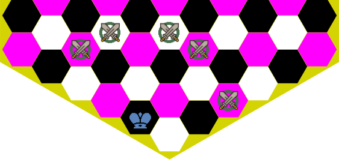

Este sitio usa cookies de Google Analytics y Microsoft Clarity
para analizar su uso:
Agotamiento de los movimientos
El contador de movimientos se restablece a cero cada vez que se mueve un peón o se captura una
pieza. Esta regla evita que una partida pueda hacerse infinita sin decidirse un ganador.
Regla de les setenta y cinco jugadas: una partida es
tablas después de setenta y cinco jugadas sin
capturas ni movimientos de peones, es decir, ciento cincuenta movimientos.
Regla de las cincuenta jugadas:
Un jugador puede exigir tablas si
en su turno han transcurrido cincuenta jugadas sin capturas ni movimientos de peones,
es decir, cien movimientos.
Ver también
Traducciones
Ahogar
Dejar al contrincante sin la posibilidad de hacer ninguna jugada legal, lo que significa que
la partida acaba inmediatamente, con una victoria por la mínima;
el jugador ahogado, que ha quedado sin movimientos, gana un punto, y su oponente dos.
Valoración
Victoria por la mínima de las blancas
(ahogan a les negras): 2-1
Victoria por la mínima de las negras
(ahogan a les blancas): 1-2
El Alfil es una pieza menor que
puede mover cualquier número de casillas en Diagonal, però no puede saltar por encima de otras piezas. Esta
característica de movimiento diagonal determina
su debilidad de color, que solo le permite
acceder a las casillas de un mismo color.
En ajedrez hexagonal, en todas las variantes que usan tableros formados per
hexcaques, el tablero consta de casillas de tres colores
diferentes, y debido a esto, y a la debilidad de
color del Alfil, generalmente se usan tres alfiles para
cada jugador, quedando así disponible uno para cada color. Es el caso de
C'escacs, el ajedrez hexagonal de Gliński y el de McCooey.
Dos Alfiles no pueden hacer jaque mate a un
Rey solitario, y se requiere como
mínimo un Pegaso y un
Alfil,
o un Pegaso y un Caballo.
Notación
La letra aconsejable para el Alfil en la
notación de C'escacs, és la J, representando un
cortesano, como en los juegos de cartas: Jack (Knave). La notación
J no está vinculada directamente con ningún lenguaje para el alfil.
Se aceptan también los alias A, B, F y
L. Son muchos los alias aceptados debido a la gran diversitat de nombres
en los diferentes lenguajes, y se han preservado los más significativos y menos confictivos.
Ver también
Traducciones
Almogávar

Almogávares catalanes.
via Wikimedia Commons
Pedro III de Aragón en el collado de las Panizas. Recoge el momento en
que el rey Pedro ordena a los almogávares que detengan los ataques para
dejar pasar al rey francés, Felipe III, que moribundo, se bate en retirada.
Bartomeu Ribó i Terriz, via Wikimedia Commons
Pieza que fue la primera sustituta del Príncipe, en las
primeras versiones de C'escacs. Inspirada en el Campeón
de Omega Chess, pero adaptada al tablero hexagonal, y con los movimientos simplificados para
eliminar la complejidad adicional que introducían los saltos. Tampoco era la pieza que necesitaba
el juego.
Ver también
Traducciones
Apertura
Todavía no traducido.
Ver también
Traducciones
Arzobispo
Pieza del ajedrez de Capablanca. Para el equivalente en C'escacs,
ver Pegaso.
Ver también
Traducciones
Ataque doble
Todavía no traducido.
Ver también
Traducciones
Batería
Todavía no traducido.
Ver también
Traducciones
Blanco
Denominación del jugador que mueve en primer lugar, incluso si sus piezas, que siempre
se denominan las piezas blancas, sean de otro color (normalmente,
un color claro).
De manera similar, los hexcaques claros del
tablero hexteselado se denominan
hexcaques blancos aunque no sean literalmente blancos, aunque sí de color
claro.
Se habla del negro en contraposición al
blanco, tanto pera las piezas, como pera los hexcaques, y al tercer color de
los hexcaques de un tablero hexteselado se le llama
color, en contraposición
al blanco y el negro.
El Alfil que mueve por los hexcaques blancos, se
le llama alfil blanco.
Ver también
Traducciones
Cabalgada
Cabalgadas del caballo; se muestran también los hexcaques
intermedios, posiciones del salto de caballo, que han de estar vacíos.
Movimiento sin captura reservado únicamente al
caballo. Consiste en:
El hexcaque intermedio, final del primer salto e
inicio del siguiente, ha de estar libre.
También el hexcaque final del segundo salto debe estar
libre, puesto que este movimiento no permite realizar una captura.
Como máximo hay doce cavalgadas posibles, una en cada posición de
salto de caballo.
Justificación
Este movimiento se introdujo en C'escacs debido al gran tamaño del
tablero hexteselado, para evitar el inconveniente del lento desplazamiento del
caballo, y permitirle participar más en el juego.
Ver también
Traducciones
Caballo
El Caballo es una pieza menor con
el característico movimiento del salto de caballo;
además, es la única pieza de C'escacs que puede
cavalgar, hacer el movimiento especial de
cavalgada. Esto le permite un máximo de doce
saltos de caballo diferentes, movimiento que le
permite capturar piezas del oponente, y solo de desplazamiento, doce diferentes
cabalgadas que no permiten hacer capturas.
Valoración
En C'escacs, el Rey y dos
Caballos no pueden dar jaque mate a un
Rey solitario, y se requiere como
mínimo un Pegaso y un
Caballo, o un
Pegaso y un Alfil.
Notación
La letra identificativa del Caballo es la N.
Se aceptan como alias la C (del nombre en catalán, castellano, portugués,
francés, italiano...) y la S (Springer, saltador en alemán).
Pieza del ajedrez de Capablanca. Para el equivalente en C'escacs,
ver Dragón.
Ver también
Traducciones
Cambio
Todavía no traducido.
Ver también
Traducciones
Captura
Todavía no traducido.
Ver también
Traducciones
Captura al paso (en passant)
Captura al paso.
Todavía no traducido.
Ver también
Traducciones
Captura del peón esquivo

Captura del peón esquivo.
Cuando un peón enfrentado en la misma columna y hexcacs consecutivos con un peón del oponente,
hace un movimiento oblicuo esquivando el peón del oponente, puede ser capturado en el siguiente
movimiento por el peón con el que se encontraba enfrentado. La captura se hace ortogonalmente,
moviendo a la posición donde se encuentra el peón del oponente; es la única captura de
movimiento ortogonal que hacen los peones.
La captura solo se puede hacer en el movimiento consecutivo al movimiento esquivo oblicuo del
peón.
Juego de ajedrez de finales del siglo XI, incorrectamente denominado Ajedrez de
Carlomagno, puesto que es posterior, y jamás lo conoció. De manofactura italiana, con
gran probabilidad, de Salerno, los cascos y escudos permiten identificar tropas normandas y
bizantinas, que se enfrentaron en aquellos años en la conquista normanda del
sur de Italia. Además del interés histórico, el juego destaca por tres características:
Los Alfiles se representan como elefantes, que es representación original de
esta pieza, desde el Xaturanga.
Las Torres se representan como cuadrigas, carros echados por cuatro caballos,
siente el también carro la representación original de esta pieza, desde el
Xaturanga.
Ya aparece la representación de la Reina, a pesar de que la pieza movía todavía
como una Alferza.
Al tercer color de los hexcaques del
tablero de ajedrez hexteselado de
C'escacs se le llama sencillamente Color,
aunque los hexcaques no sean de color, pero deben ser de una tonalidad media,
entre las tonalidades del blanco y las del negro.
Se habla de hexcaques de Color, en
contraposición al Blanco y
el Negro.
El hexcaque central del
tablero hexteselado es de color. Es el punto de máximo control
ortogonal del tablero, pero no de máximo control diagonal, puesto que los hexcaques
que lo rodean incrementan ligeramente el control diagonal.
Al Alfil que se mueve por los hexcaques
de color se le llama el Alfil de color.
Los hexcaques de una columna quedan numerados de dos en dos, porque las líneas transversales no
atraviesan todas las columnas.
Columnas pares
Columnas de línias pares; las atraviesan las líneas pares, y los hexcaques tienen numeración
par.
Columnas impares
Columnas de líneas impares; las atraviesan las líneas impares, y los hexcaques tienen
numeración impar.
Notación
Cada columna se nombra mediante una lletra.
Les once columnas medias mantienen la denominación del ajedrez hexagonal de Gliński,
desde la A hasta la L, exceptuando la J, que Gliński no incluyó
para evitar confusiones. En C'escacs se incorporan cuatro columnas:
La P y la T son anteriores a la A, y las columnas X y Z
posteriores a la L.
El nombre de las columnas se ha de escribir siempre en mayúsculas. Por orden, sus nombres son:
P, T, A, B, C, D, E, F,
G, H, I, K, L, X, Z.
La columna central F es una columna de líneas pares; las columnas pares son:
T, B, D, F, H, K, X.
Las columnas impares son:
P, A, C, E, G, I, L, Z.
Un Hexcaque cualquiera queda identificado por la
Columna y la
Línia transversal a las que pertenece.
Ver también
Traducciones
Columna central
La columna F es la columna con más
hexcaques (quince). Comienza en la linea cero, y acaba en la veintiocho. La numeración de
las lineas avanza de dos en dos, porque las lineas impares no tenen hexcaque en la
columna central. Divide el tablero hexteselado entre el
flanco de rey i el
flanco de dama:
Las columnas del flanco de Dama
P, T, A, B, C, D,
E. Izquierda para las blancas, derecha para las negras.
Las columnas del flanco de Rey
G, H, I, K, L, X,
Z. Derecha para las blancas, izquierda para las negras.
Ver también
Traducciones
¡Compongo!
Todavía no traducido.
El término francés j'adoube! es internacionalmente conocido.
Ver también
Traducciones
Coordenadas CTL
CTL es el acrónimo de
Columns and Transversal Lines,
un sistema de coordenades para un hexteselado. Es
el sistema que se usa en C'escacs para identificar un
hexcaque: una letra denota la
Columna, i un número indica la
Linea Transversal.
A veces, también se denomina sistema doble o doblado, porque la
numeración de los hexcaques de las columnas avanza de dos en dos, dado que una
columna solo atraviesa líneas pares o impares.
Ver también
Traducciones
Coronación
En C'escacs se debe usar el término promoción. Coronación es un sinónimo que se usa en el ajedrez
ortodoxo haciendo alusión a la conversión del Peón en Reina. Considerando
las reglas de promoción de los peones en C'escacs, el término
coronación no parece muy adecuado.
Ver también
Traducciones
Corte
Espacio en forma de rombo delimitado por los peones del jugador. Los dos peones de los flancos, los
únicos que no están defendidos, quedan fuera, todas las otras piezas se posicionan dentro de la
corte en el inicio de la partida.
Para las blancas, el rombo: B4 – F8 – K4 – F0
Para las negras, el rombo: B24 – F20 – K24 – F28
Ver también
Traducciones
CTL-AN
CTL – Algebraic Notation es una notación algebraica de ajedrez que usa las
coordenadas CTL; es la notación algebraica de
C'escacs.
Ver también
Traducciones
CTL-FAN
Columns and Transversal Lines – FAN, Figurine Algebraic Notation;
notación algebraica indéntica a
CTL-AN, excepto que usa los carácteres Unicode
específicos para las piezas de ajedrez, en lugar de las
letras identificativas.
A diferencia de la notación CTL-AN, se usa un carácter
diferente para las piezas según el color, existiendo nueve carácteres que identifican las
nueve piezas blancas y nueve para las piezas negras.
Las letras identificativas son de uso más simple para las anotaciones que hacen a las personas;
además, los símbolos Unicode pueden requerir una fuente mayor para distinguir claramente
entre el Guiverno (Dragón), el Pegaso y el Caballo.
Peón
Elefante
Alfil
Caballo
Pegaso
Roque
Guiverno
Dama
Rey
Alabardero
Torre
Dragón
Reina
P
E
J
N
G
R
V
D
K
♙ ♟
☖ ☗
♗ ♝
♘ ♞
🩐 🩓
♖ ♜
🩏 🩒
♕ ♛
♔ ♚
U+2659, U+265F
U+2616, U+2617
U+2657, U+265D
U+2658, U+265E
U+1FA50, U+1FA53
U+2656, U+265C
U+1FA4F, U+1FA52
U+2655, U+265B
U+2654, U+265A
Ver también
Traducciones
CTL-PGN
El registro de partidas con la notación CTL-PGN es parecida al formato
PGN
(Portable Game Notation), añadiendo a la
notación algebraica información en lo referente a la partida (metainformación)
usando etiquetas, así como comentarios y
variaciones a las jugadas.
Permite intercambiar partidas con los ordenadores. Es un formato para ficheros de texto plano
(hoy en día Unicode, codificado en UTF), que prefija la notación
algebraica (CTL-AN) con unas etiquetas previas
para añadir metainformación. Una etiqueta se escribe en una línea, entre corchetes
[ … ], y contiene una palabra como identificador de la etiqueta,
seguido de un texto entre comillas, que es el valor de la
etiqueta.
Después de las etiquetas aparece la transcripción de las jugadas en notación
algebraica, donde se permiten comentarios, escritos entre llaves
{ … }, y variaciones. Las variaciones son jugadas alternativas
escritas entre paréntesis ( … ), y se podan anidar, haciendo variaciones de las
variaciones.
Pieza que puede mover como el Roque (Torre) y como el Alfil.
Junto con los Roques (Torres) y el Guiverno
(Dragón) constituye una de las
piezas mayores de C'escacs.
Valoración
Como pieza mayor, se puede hacer jaque mate con un
Rey y una Dama a un Rey solitario.
El Guiverno
(Dragón) y la Dama tienen
aproximadamente la misma potencia. La Dama es preferible contra el
Pegaso, pero el
Guiverno
(Dragón) es mucho mejor contra el
Roque
(Torre).
El Rey y la Dama no vencen a un
Rey y un Roque
(Torre): 4.3% de les posiciones son
tablas por jaque continuo, y un 37.2 % son tablas (no se logra el mate).
La letra distintiva de la Dama es la D. Se acepta la Q
como letra alternativa.
Ver también
Traducciones
Debilidad de color
Todavía no traducido.
Ver también
Traducciones
Descubierta, ataque a la
Todavía no traducido.
Ver también
Traducciones
Desarrollar
Todavía no traducido.
Ver también
Traducciones
Doblar las torres
Todavía no traducido.
Ver también
Traducciones
Dragón

Guiverno (Wyvern) de la bandera que Owain Glyndŵr mostró después de
reclamar el reino de Gales en The Last War of Independence. Imagen:
Hogyncymru, CC BY-SA 4.0, via Wikimedia Commons

Guiverno (Víbria) de Tarragona en el Festivitas Bestiarum de Tortosa.
Como pieza mayor, se puede dar jaque mate
con un Rey y un Guiverno (Dragón) a un Rey
solitario.
Su potencia es muy similar a la potencia de la Dama:
El Guiverno
(Dragón) es preferible contra el
Roque
(Torre), pero la
Dama es mucho mejor contra el
Pegaso.
Notación
La letra distintiva del Dragón (Guiverno) és la V
(en catalán Víbria en francès Vouivre). S'accepta la
W (Wyvern, en anglès o alemany) com a letra alternativa.
El nombre
El ajedrez es un juego de raices medievales, incluso posiblemente con orígenes anteriores. Qué
puede representar una fuerza equivalente a la Dama, que és la pieza más potente del
tablero? La respuesta para mí fué evidente: un Dragón; en realidad un Guiverno,
que en Cataluña se representa como un Dragón femenino.
Ver también
Traducciones
Elefante
Movimientos del elefante.
En el ajedrez del sudeste asiático
le dan al alfil el movimiento del elefante.
El elefante es una pieza que solo tiene cinco movimientos, dos ortogonalmente hacia adelante,
y cuatro movimentos diagonales que mantienen el color del hexcaque donde se encuentra
posicionado, pero los dos movimentos ortogonales le permiten cambiar de color, evitando la
debilidad de color. Dos de los movimientos
diagonales le permiten ir hacia atrás, evitando así también la limitación que tienen los
Peones. Los peones, conjuntamente con esta pieza, constituyen la
tropa.
Se pueden recordar los cinco movimientos, pensando que los dos movimientos hacia adelante dibujan
la trompa del elefante, y los cuatro movimientos diagonales, las patas.
Es una pieza lenta en el gran hexteselado de C'escacs, pero su
velocidad es equivalente a la velocidad de los peones. La pieza es importante para
colaborar en la creación de la estructura de
peones, y, para esta función, la velocidad es adecuada.
La valoración es poco superior a un peón, particularmente si se considera que no tiene
ninguna de las características especiales de los peones: ni promoción, ni
captura al paso ni captura del peón esquivo. Típicamente se valora como
dos peones.
Notación
La letra distintiva del Elefante, és la lletra E. El nombre alternativo
es Alabardero, y la letra alternativa la
H.
Considerando que no hay un carácter Unicode específico disponible para la notación
CTL-FAN (dos, uno negro y otro blanco), se adoptan los
caracteres ☖ (U+2616) y ☗ (U+2617), originariamente
reservados para el Shogi.
Ver también
Traducciones
En prise
Todavía no traducido.
Ver también
Traducciones
Enfilada
Todavía no traducido.
Ver también
Traducciones
Enroque
Es el único movimiento de ajedrez que mueve simultáneamente dos piezas del mismo jugador, en el
caso de C'escacs, hasta tres piezas. El movimiento consiste en el
salto del rey complementado con el desplazamiento de
un (enroque simple) o ambos roques
(torres) (enroque doble). Este movimiento solo
se puede hacer si se cumplen las siguientes condiciones:
Es el primer movimiento de todas las piezas (dos o tres) que participan.
En el momento de hacer el movimiento no hay un ataque sobre el Rey (el Rey no
está en jaque).
Los hexcaques de destino están libres; no se puede hacer una captura en un
enroque.
El RoqueTorre puede hacer el movimiento ortogonal, sin que
ninguna pieza se lo impida.
Por supuesto, el Rey no puede quedar en un hexcaque amenazado.
Estrategia
Se puede decir que, en C'escacs, el enroque permite el movimiento evasivo del
salto del rey,conjuntamente con un movimiento adicional de
los
RoquesTorres, que pueden colaborar en la defensa o en un ataque. Su
valor estratégico es mucho menor del que en representa en el ajedrez ortodoxo, y sempre está
muy condicionado per la posición del momento. No es demasiado conveniente un
desarrollo planificado para hacer este movimiento,
aunque reservarse la opción sí que puede resultar conveniente.
A diferencia de la evolución histórica del enroque en el ajedrez ortodoxo, se
conservan el salto del rey y el enroque, porque la existencia del enroque
no deja el movimiento del salto del rey como un movimiento obsoleto y poco útil.
Ver también
Traducciones
Enroque Doble
Enroque que usa el Rey y las dos Torres
simultáneamente.
Movimiento consistente en un Salto del rey y, en el mismo
movimiento, sin ceder el turno, el desplazamiento de las dos Torres a hexcaques
que sean ortogonalmente contiguos entre ellos, y ambos ortogonalmente contiguos al
hexcaque donde queda posicionado el Rey. Las tres piezas se mueven en un único
movimiento, y el rey no impide el movimiento de las torres, però se han de cumplir
las cinco condiciones requeridas para hecer un enroque:
Es el primer movimiento de cada una de las tres piezas que participan.
En el momento de hacer el movimiento no hay un ataque sobre el Rey (el Rey no
está en jaque).
Los hexcaques de destino están libres; no se puede hacer una captura en un
enroque.
Ambos RoquesTorres pueden hacer el movimiento ortogonal, sin
que ninguna pieza se lo impida.
Por supuesto, el Rey no puede quedar en un hexcaque amenazado.
Notación
La notación se construye con un prefijo que indica las piezas que intervienen en el movimiento:
KRR, el Rey y dos Roques. Separadas por un guión se indican tres letras: la
primera
es el nombre de la columna destino del rey, la segunda la columna destino del Roque de Rey, y
la tercera la columna destino del Roque de Dama.
Hay cincoenroques dobles, que se prefijan con
KRR. Se distribuyen en tres diferentes localizaciones del
Salto del Rey:
Movimiento consistente en un Salto del rey y, en el mismo
movimiento, sin ceder el turno, el desplazamiento de un Roque a un hexcaque que
sea ortogonalmente contiguo al hexcaque donde queda posicionado el Rey. Ambas
piezas se mueven en un único movimiento, y el rey no impide el movimiento del
Roque, pero se han de cumplir las cinco condiciones requeridas para hacer un enroque:
Es el primer movimiento de cada una de las dos piezas que participan.
En el momento de hacer el movimiento no hay un ataque sobre el Rey (el Rey no
está en jaque).
Los hexcaques de destino están libres; no se puede hacer una captura en un
enroque.
El RoqueTorre puede hacer el movimiento ortogonal, sin que
ninguna pieza se lo impida.
Por supuesto, el Rey no puede quedar en un hexcaque amenazado.
Notación
La notación se construye con un prefijo que indica las piezas que intervienen en el movimiento:
KRK para los enroques con el Roque de rei, i KRD para los que se hacen con el
Roque de dama. Separadas por un guión se indican dos letras, la primera es el nombre de la
columna destino del Rey, y la segunda la del Roque.
Únicamente hay un caso que requiere una indicación adicional, puesto que KRK-HI indica que
la columna de destino del Rey es la columna H, y la columna I para el
Roque; pero cuando el Rey se mueve a la columna H hay dos posiciones en la
columna I para el Roque de rey. KRK-HIO indica que el Roque solo se
ha desplazado un hexcaque, mientras que KRK-HIOO indica que el Roque se ha
desplazado dos hexcaques. Solamente los enroques KRK-HIO y KRK-HIOO
requieren esta indicación distintiva.
Hay once enroques con el Roque de Rey, que se
prefijan con KRK. Se distribuyen en cuatro diferentes
localizaciones del Salto del Rey:
KRK-EE, KRK-EF
KRK-FE, KRK-FG
KRK-HIO, KRK-HIOO, KRK-HH, KRK-HG
KRK-IH, KRK-II, KRK-IK
Hay ocho enroques con el Roque de Dama, que se
prefijan con KRD. Se distribuyen en cuatro diferentes
localizaciones del Salto del Rey:
KRD-DD, KRD-DE
KRD-ED, KRD-EF
KRD-FE, KRD-FG
KRD-HH, KRD-HG
Ver también
Traducciones
Espacio
Todavía no traducido.
Ver también
Traducciones
Estrategia
Todavía no traducido.
Ver también
Traducciones
Estructura de peones
Configuración y el emplazamiento de los peones en el tablero. Dado que los
peones son las menos móviles de las piezas de ajedrez, la estructura de peones es
relativamente estática.
En C'escacs
Es cierto que en C'escacs los peones incorporan más movilidad,
pero aún así, la tropa (peones y elefantes)
tiene movilidad limitada. Los elefantes precisamente se incorporaron como herramienta
para la construcción de estructuras de peones más sólidas: las
filas de peones.
La estructura de peones se construye principalmente con dos estructuras:
Las filas de peones, peones posicionados
consecutivamente en una fila oblicua.
Correctamente defendidas son las estructuras más útiles, pero se requiere alguna defensa
para cada uno de los peones, porque no quedan defendidos entre ellos; esta tarea
generalmente recae en los elefantes.
Las lineas de peones, donde los peones se
defienden
entre ellos, formando una linea desde el primero, que no està defendido. Este tipos de
estructura es menos útil estratégicamente, pero nos puede parecer más familiar, per analogía
con el ajedrez ortodoxo.
Comparación con el ajedrez ortodoxo
En el ajedrez ortodoxo, una secuencia de peones
colocados en una diagonal, de manera que cada uno está protegido por el anterior, excepto el
primero, permite interrumpir la continuidad de las filas horizontales y verticales, y de las
diagonales del color en el que se encuentra la estructura, es decir, la mitad de las diagonales:
una gran efectividad.
Los peones en linea, formación similar en
C'escacs, le faltan gran parte de estas propiedades: quedan dos
colores todavía por cubrir, cubriendo únicamente uno de los tres colores, pero también deja
filas oblícuas abiertas; el resultado es de muy poca efectividad. Este problema aparece en el
ajedrez hexagonal, cuando los peones capturan a través de las lineas diagonales.
Este es el motivo principal del ajedrez de Gliński para definir las capturas en ortogonal
para los peones: las estructuras de peones en el ajedrez de Gliński se
construyen ortogonalmente, en filas oblícuas, haciendo que sean efectivas.
En C'escacs, las filas de
peones, filas ortogonales, se pueden construir usando elefantes para a la
defensa de los peones; por eso, más bien se tendría que hablar de estructura de la
tropa, puesto que los elefantes son una parte
fundamental. Un elefante fácilmente puede defender hasta tres peones formando cuña, pero
será preferible no sobrecargar los elefantes, que son los eslabones débiles de la cadena.
En las filas de peones se interrumpe la continuidad
de todas las filas, y de la mitad de las lineas diagonales, así que se puede decir que es una
estructura equivalente a las secuencias de peones en diagonal del ajedrez ortodoxo, pero, en C'escacs, con un coste
mayor, y también un estabilidad un poco más precaria, considerando la movilidad mayor de las
piezas.
Ver también
Traducciones
Figura
Las piezas de C'escacs de más entidad, en
contraposición a la tropa. En concreto:
La zona formada por los hexcaques de les posiciones
iniciales de las figuras se denomina la corte.
Ver también
Traducciones
Fila
En un tablero de ajedrez hexteselado, cada uno de los
lados de un hexcaque forma una fila amb el
hexcaque adyacente por este lado, y sucesivamente con el
siguiente, adyacente en la misma dirección. Esta fila se prolonga análogamente con el
hexcaque anterior adyacente por el lado opuesto,
junto con los precedentes en la misma dirección, pero en sentido contrario; por tanto,
cada hexcaque pertenece a tres filas diferentes.
Las filas longitudinales, generalmente
referidas como columnas, atraviesan el
tablero hexteselado desde la mitad de las blancas, hasta la mitad de las
negras. Cada columna se identifica usando
una letra.
Las filas oblicuas forman una inclinación de 60º con las
columnas;
simétricamente, otra fila oblícua forma una inclinación de -60º con la misma
columna. Cada hexcaque
pertenece a una columna i dos filas oblicuas.
Ver también
Traducciones
Fila de peones
Peones posicionados en una fila oblicua
consecutivamente, de manera que se encuentran posicionados en
columnas consecutivas y
líneas consecutivas.
Constituyen un impedimento para los
movimientos ortogonales y la mitad de los
movimientos diagonales, sin quedar la estructura
vinculada a ningún color. Esta estructura de
peones
requiere una defensa para cada uno de los peones integrantes,
porque los peones capturan diagonalmente, y no se defienden
entre ellos. Estas barreras que forman las filas de peones delimitan
el espacio de los jugadores, resultando mu útiles, motivo
por
el que generalmente se construyen con la ayuda de Elefantes
para su defensa.
Como pieza mayor, se puede hacer jaque mate
con un Rey y un Guiverno (Dragón) a un Rey solitario.
Su potencia es muy similar a la potencia de la Dama:
El Guiverno (Dragón) es preferible contra el
Roque (Torre), pero la
Dama es mucho mejor contra el
Pegaso.
Notación
La lletra distintiva del Guiverno (Dragón) es la
V (en catalán Víbria, también en francés
Vouivre). Se acepta como letra alternativa la W
(Wyvern, en inglés o alemán).
El nombre
En realidad el Dragón de C'escacs es
un Guiverno,
que en Cataluña es conocido como un tipo de Dragón que se caracteriza, entre otras cosas, por
ser hembra. Usualmente, se usa el más familiar término Dragón, a pesar de ser el Guiverno
una bestia muy conocida en Cataluña, así como en otros lugares (Inglaterra, Gales...), pero es
una mitología fantástica medieval, y quizás no todo el mundo está interesado. Observar que el
Guiverno tiene solo dos patas, en vez de las cuatro que tiene el Dragón.
Ver también
Traducciones
Hexcaque
Casilla de un tablero de ajedrez hexteselado, con forma
hexagonal. Puede ser de uno de los tres colores diferentes del teselado que forma
el tablero:
Además, se da el caso de
jaque mate,
que usa el símbolo #, en lugar del símbolo
+.
Ver también
Traducciones
Jaque contiguo
Jaque que se produce por una pieza posicionada en un
hexcaque contiguo ortogonal o diagonalmente a la posición del Rey. Técnicamente
es equivalente al jaque a salto de caballo,
excepto que el Rey tendrá la opción de capturar la pieza, si no está protegida.
Es significativo, porque el Rey no tiene oportinidad de cubrirse; solo quedan las
opciones de capturar la pieza que le amenaza, o mover el Rey.
En la transcripción de partidas es importante indicarlo, para remarcar la situación y
facilitar la lectura a las personas.
Notación
Es un caso d'Jaque: Al final del movimiento se agrega el
símbolo +.
Aunque opcional, es muy recomendable agregar además el símbolo de acento circunflejo
^, es decir +^, para informar de que
es un jaque contiguo, una situación en la que se deberá capturar la pieza que
amenaza, o mover el Rey.
Jaque que se produce por una pieza posicionada
en un hexcaque ortogonal o diagonalmente a la posición del Rei,
però no contiguo. Es significativo, porque es el caso que deja más opciones
al Rey: cubrirse, capturar la pieza que le amenaza, o mover el Rey.
En la transcripción de partidas es importante indicarlo, para remarcar la
situación y facilitar la lectura por las personas.
Notación
Es un caso de jaque: Al final de la jugada
se agrega el símbolo +.
Aunque opcional, es muy recomendable agregar además el símbolo de infinito
∞, es decir +∞, para informar
que es un jaque a distancia.
Ver también
Traducciones
Jaque doble
Jaque que se produce por la amenaza simultánea de dos piezas.
Es un caso concreto de ataque doble a la
descubierta, donde los ataques de ambas piezas se producen
contra el Rey.
En esta situación, se tendrá que mover el Rey, porque, siendo dos las piezas
atacantes, no será posible ni cubrirse del ataque ni capturar la pieza que ataca. Es posible
que una de les piezas atacantes pueda aprovechar el hexcaque que abandona el
Rey para hacer un segundo Jaque, protegiendose
con
la otra pieza participante del jaque doble.
Durante una partida, se puede informar al contrincante de que el jaque es
doble cuando el nivel es de principiante.
En la transcripción de partidas es importante indicarlo, para remarcar la situación y
facilitar la lectura a las personas.
Notación
Es un caso d'Jaque: Al final del movimiento se agrega el
símbolo +.
Aunque opcional, es muy recomendable agregar otro símbolo +,
es decir +, para informar que es un jaque doble, una
situación en la que el Rey se tendrá que mover.
Ver también
Traducciones
Jaque mate
Jaque en el que el Rey no tiene ninguna opción para
eludir la amenaza.
Notación
Aún siendo un caso concreto de Jaque, es el final de la
partida, y tiene su propio símbolo. Se indica mediante el símbolo #.
Jaque que se produce por una pieza a
salto de caballo de la posición del
Rey. Técnicamente equivalente al jaque contiguo, excepto que el Rey no tiene
opción de capturar el mismo la pieza, aunque no esté protegida. Es significativo,
porque el Rey no tiene oportinidad de cubrirse; solo quedan las opciones de
capturar la pieza que le amenaza, o mover el Rey.
En la transcripción de partidas es importante indicarlo, para remarcar la situación y
facilitar la lectura a las personas.
Notación
Es un caso d'Jaque: Al final del movimiento se agrega el
símbolo +.
Aunque opcional, es muy recomendable agregar además el símbolo de acento circunflejo
^, es decir +^, para informar de que
es un jaque a salto de caballo, una situación en la que se deberá capturar la
pieza que amenaza, o mover el Rey.
Un turno completo, compuesto por el movimiento de las
blancas y el de las negras. El turno de un jugador es media jugada,
también denominado un movimiento,
y, en ajedrez por ordenador, un ply.
Ver también
Traducciones
Jugada secreta
Todavía no traducido.
Ver también
Traducciones
Linea
En un tablero de ajedrez hexteselado, cada uno
de los vértices de un hexcaque definen una
línea con un hexcaque del mismo color, y sucesivamente con
el siguiente en la misma dirección, junto con los precedentes en sentido contrario.
A diferencia de las filas, los hexcaques que forman una líneano estan en
contacto, sino que se encuentran conectados por la arista que
separa los dos hexcaques de diferente color adyacentes a
las aristas que forman el vértice.
Las líneas definen los movimientos
diagonales, los movimentos del Alfil. Una propiedad
importante es que todos los hexcaques que
pertenecen a una línea son del mismo color; por tanto, hay
líneas blancas,
líneas negras y
líneas de color.
Las líneas transversales se numeran,
desde la cero, hasta la veintiocho. La primera (cero) y la última línea
(veintiocho), son líneas que solo tienen un
hexcaque.
Actuan midiendo el avance desde la mitad de las blancas hasta la mitad de las
negras, división que efectivamente se da en la línea catorce, línia que se
denomina línea medianera: los siete
hexcaques que forman la línea medianera
se encuentran equidistantes a ambos bandos.
La línea medianera está formada por siete hexcaques de color.
Los hexcaques de la línea medianera son equidistantes de la
mitat de las blancas y la mitad de las negras.
Las líneas transversales actuan midiendo el avance desde la mitad de las blancas
hasta la mitad de las negras, división que efectivamente se da en la línea catorce, línia
que se denomina línea medianera: los siete
hexcaques que forman la línea medianera
se encuentran equidistantes a ambos bandos.
Notación
Las líneas transversales se numeran,
desde la cero, hasta la veintiocho. La primera (cero) y la última línea
(veintiocho), son líneas que solo tienen un hexcaque.
Un hexcaque cualquiera queda identificado por la
columna y la línea transversal a las que
pertenece.
Ver también
Traducciones
Letra identificativa de las piezas
Cada una de las piezas de ajedrez se identifica con una letra. Esta letra, en
C'escacs, y en la notación algebraica CTL-AN, es invariante, indistintamente del idioma. Se definen también
algunas letras alternativas, que requieren un uso coherente, utilizando la misma
letra en toda la partida, y únicamente las letras alternativas ya predefinidas; en
CTL-PGN se ha de incorporar la declaración de la letra
alternativa al principio para ser usada, invalidando la letra estándar de identificación.
También existen los caracteres Unicode de ajedrez, que es pueden usar de manera similar a las
letras alternativas. En este caso, se ha de tener en consideración que existe un caracter
diferente para representar cada pieza en su versión para el juego de blancas, y otro diferente
para la misma pieza del juego de negras; la notación algebraica usando los caracteres
Unicode de ajedrezCTL-FAN usa un caracter
diferente para cada pieza y color.
Peón
Elefante (alabardero)
Alfil
Caballo
Pegaso
Roque (torre)
Guiverno (dragón)
Dama (reina)
Rey
♙ ♟
☖ ☗
♗ ♝
♘ ♞
🩐 🩓
♖ ♜
🩏 🩒
♕ ♛
♔ ♚
P
E
J
N
G
R
V
D
K
A, B, F, L
C, S
T
W
Q
Ver también
Traducciones
Mate
Abreviación de jaque mate.
Jaque en el que el Rey no tiene ninguna opción para
eludir la amenaza.
Notación
Aún siendo un caso concreto de Jaque, es el final de la
partida, y tiene su propio símbolo. Se indica mediante el símbolo #.
El mate del loco es el jaque mate más rápido posible, que solo puede pasar si el jugador
de blancas juega extraordinariamente mal. En C'escacs se da en
seis jugadas, tres muy mal jugadas de las blancas, y unos movimientos un poco
artificiosos de las negras para conseguir el mate con un caballo y un
pegaso. En el registro adjunto se muestran alternativas (entre paréntesis) a los tres
movimientos erróneos de las blancas; solo una de estas rectificaciones es suficiente para evitar
el mate.
{ @W: Última oportunidad de reacción desperdiciada }
(6. GD2-F6
.{ @W todavía estaba a tiempo de evitar ~gL5-H6+^ }
)
(6. RI3-I7
.{ @W otra alternativa para evitar ~gL5-H6+^ }
)
0-3
{ @W Ha de descuidar ~JF6 i ~EH4 }
{ @B Ataca ~K a salto de caballo con ~g i ~n }
Ver también
Traducciones
Material
Todavía no traducido.
Ver también
Traducciones
Material insuficiente
En un final, cuando
todos los peones han sido capturados, y a una de las partes le queda solo el
Rey, y la otra parte no tiene
piezas mayores:
Si el jugador con más material solo tiene el
Rey, solitario, o con una
pieza menor, o un
Elefante, no es posible el
Mate, y se dice que el jugador tiene
material insuficiente, y la partida es
tablas.
Si el jugador con más material solo tiene una
pieza mediana (Pegaso)
o dos piezas menores, o una
pieza menor y un
Elefante, o cuando las únicas piezas que le quedan
son Elefantes, solo existen raras y contadas
posiciones en las que el mate es posible, pero con estas piezas no se puede encaminar al
Rey a una posición de mate.
Si la posición no permite vislumbrar el mate
en cinco jugadas, también sería un caso de
material insuficiente, pero se tratará como
tablas pactadas, o, en caso contrario,
si los jugadores no acuerdan finalizar la partida en tablas, se producirán tablas
cuando se agoten los movimientos,
aplicando la regla de las cincuenta jugadas (cien movimientos),
o la regla de las setenta y cinco jugadas (ciento cincuenta movimientos).
Para hacer mate a un Rey
solitario se requiere, como a mínimo, una de les dos opciones:
Media jugada. Cada jugador hace un movimiento en su
turno. La suma del movimiento de las blancas y el movimiento de las negras en
turnos consecutivos es una jugada.
Movimento que sigue la línea que corta los hexcaques en una
diagonal entre dos vértices opuestos.
Se refiere a los movimientos que pueden hacer los Alfiles.
Ver también
Traducciones
Movimiento doble
Opción que tienen los peones para avanzar dos
hexcaques simultáneamente, cuando lo hacen avanzando recto
hacia adelante por una columna.
Ver también
Traducciones
Movimiento forzado
Un movimiento en que el jugador no tiene ninguna alternativa viable. También la promoción de un
peón en espera de promoción entra en la
categoria de movimiento forzado, puesto que las reglas no permiten otro movimiento.
El término también se usa, por extensión:
Un movimiento que es el único que no implica un seria desaventaja para el jugador que lo
hace.
Una secuencia de jugadas en las que los movimientos de un jugador son movimientos
forzados,
como en mate forzado, o ganar una pieza de manera forzada.
Ver también
Traducciones
Movimiento ilegal
Un movimiento que no está permitido por las reglas del
ajedrez.
En el caso que durante una partida se descubra un movimento ilegal, debe ser
inmediatamente rectificado.
Si no se rectifica, y el movimiento ilegal se descubre más tarde, la partida es nula,
indistintamente de las consecuencias directas del movimiento ilegal.
Es necesario que el movimiento ilegal sea reconocido por ambos jugadores;
este caso puede darse por una mala interpretación de las reglas por parte de los
jugadores, o si se ha anotado la partida.
El motivo de la denominación ortogonal es la ortogonalidad del movimiento con
respecto a las aristas de los hexcaques. Pero también hace
referencia a las coordenadas cúbicas, considerando el
tablero hexteselado como una
proyección de un cubo, quedando así las tres
filas de un hexcaque,
una por cada pareja de aristas opuestas, como
tres direcciones diferentes de un cubo, ortogonales entre ellas.
Ver los dibujos de las
coordenadas
cúbicas, en la página web de Amit PatelRed Blob
Games.
Movimiento que se inicia desde un hexcaque saliendo por uno
de sus lados, hacia el hexcaque de al lado; el movimiento
puede continuar sucesivamente en la misma dirección.
Referente a los movimientos que puede hacer el Roque
(Torre).
Ver también
Traducciones
Movimiento triple
Opción que tienen los peones para avanzar tres
hexcaques recto hacia adelante por la
columna, cuando se encuentran situados en alguna de las
posiciones iniciales de los peones en la corte,
excepto el caso de la columna central (la columna
F); es indiferente si un peón se ha movido o no, y la
capacitat la proporciona el hexcaque en el que se
encuentra.
Las dos columnas de los flancos (columnas A y L) se encuentran fuera de
la corte y no tienen esta capacidad.
Posiciones en las que los peones pueden avanzar tres
hexcaques:
En el flanco de Dama, columnas: E, D, C, B.
Blancas: E7, D6, C5, B4.
Negras: E21, D22, C23, B24.
En el flanco de Rey, columnas: G, H, I, K.
Blancas: G7, H6, I5, K4.
Negras: G21, H22, I23, K24.
Justificació
El movimiento permite a los peones posicionarse junto
a la línea medianera en su primer movimiento;
los más retrasados son los de las columnas B y K, pero después de su primer
movimiento, pueden quedar a una distancia de un movimiento de esta línea, situación similar
al resto.
Los peones de las columnas de los flancos A y
L ya se encuentran avanzados respecto a las posiciones de los demás, y están un
hexcaque más próximos a la
promoción.
Ver también
Traducciones
Negro
Denominación del jugador que mueve en segundo lugar, aunque sus piezas, siempre
denominadas las piezas negras, en ocasiones sean de otro color (normalmente obscuro).
De manera similar, las casillas obscuras del tablero
hexteselado se denominan las casillas negras, hexcaques negros,
a pesar que no sean literalmente negras, pero sí obscuras.
Se habla de negro en contraposición al blanco,
tanto para las piezas, como para las casillas. El tercer color de los hexcaques de
un tablero hexteselado se denomina color, en
contraposición al blanco y el negro.
El Alfil que mueve por los hexcaques negros, a menudo
se denomina el Alfil negro.
Ver también
Traducciones
Notación algebraica
La notación algebraica es un sistema de notación de ajedrez que se usa para transcribir las
jugadas de manera que puedan ser reproducidas con toda precisión posteriormente.
La notación para C'escacs es una extensión de la notación algebraica
(AN), que denominamos
CTL-AN,
por el uso de coordenadas
CTL. La notación
alternativa CTL-FAN
(Columns and Transversal Lines - FAN, Figurine Algebraic Notation), usa los
caracters Unicode específicos para las piezas de ajedrez, en lugar de letras
identificativas.
El formalismo se concreta todavía más en el formato para el intercambio de partidas para las
computadoras, CTL-PGN (Columns and
Transversal Lines - PGN, Portatil Game Notation), en el que se requiere agregar unas
etiquetas identificativas de la partida, y se admiten muchas otras opcionalmente para agregar
información adicional. Pero las etiquetas también permiten incorporar información funcional,
como la situación previa de una partida que se renauda, usando la notación
PDTL -
Position Description by Transversal Lines, una notación muy similar a la notación
FEN (Forsyth-Edwards Notation).
No es un nombre notación algebraica particularmente adecuado, por no tener ninguna
relación
con el álgebra, pero por tradición se ha mantenido el nombre.
Ver también
Traducciones
Pieza
Cada una de las fichas que intervienen en el juego,
blancas y
negras.
Pieza capturada por el oponente que es susceptible de ser recuperada mediante la
promoción de un peón. Todas las
figuras excepto el Rey son
recuperables, pero en el caso del alfil se aplica la regla que no
permite a un jugador tener en juego más de un alfil de cada color:
Alfil, solamente si es del color del hexcaque en el que
se produce la promoción.
Piezas no recuperables:
El Rey no es recuperable. El Rey no se
captura; si el Rey no tiene modo de evadirse de una amenaza, es
jaque mate, y el jugador pierde la partida.
Un Alfil solo es recuperable del mismo color que
tenía cuando se capturó.
No se permite tener en juego más de un alfil del mismo color; podemos
pensar en los tres alfiles como tres figuras diferentes.
La tropa no es recuperable, ni los
peones, pero tampoco los elefantes.
Con el Rei, un Pegaso y una
pieza menor
se puede hacer jaque mate a un Rey solitario. Esto justifica su clasificación
como pieza mediana.
La Dama es preferible contra el Pegaso, pero el Guiverno
(Dragón) lo es contra el Roque (Torre).
Notación
La letra distintiva del Pegaso es la G.
El nom
El nombre del Pegaso se escogió por su comportamiento en el tablero hexteselado. De
la misma forma que el Alfil moderno tomó inicialmente el nombre de mensajero o
corredor, por su capacidad de desplazarse por el tablero, el Pegaso tiene la
capacidad de situar un Caballo rápidamente en una posición lejana; en realidad una
pieza más potente que un Caballo, pero con la propiedad que le aporta la velocidad de un
Alfil, de un mensajero o corredor. El nombre, pues, resultaba obvio:
un caballo volador.
Se ha de entender también que, en el tablero hexagonal, el Caballo es una pieza
ligeramente más potente que el Alfil; la combinación de ambas es una pieza más potente,
pero además del Alfil incorpora la velocidad, que es la gran debilidad del Caballo
en un tablero del tamaño de C'escacs.
Ver también
Traducciones
Peón
Movimientos y capturas del peón,
sin incluir movimientos especiales.
El Peón es la pieza mínima, con desplazamiento ortogonal en las tres direcciones hacia
adelante, y la captura en diagonal, también hacia adelante, en dos direcciones. Es una pieza
que tiene diferentes movimientos para el desplazamiento y para las capturas.
El Peón siempre avanza hacia adelante; cuando un peón alcanza el último
hexcaque de una columna se produce la
promoción del Peón, siempre que exista una
pieza recuperable disponible.
Los movimientos del Peón son siempre hacia adelante, en los tres sentidos ortogonales que
permite el hexcaque en el que se encuentra posicionado. Si el movimiento es recto hacia
adelante por la misma columna, se puede hacer un
movimiento doble, avanzando dos hexcaques.
En les posiciones iniciales de los peones en la corte
este movimiento puede ser triple, excepto en
la
columna central (F). Tampoco es posible
en las columnes A y L de los flancos, externos a la
corte; de hecho estos peones ya tienen posiciones
avanzadas en un hexcaque respecto al resto.
El Peón captura con movimiento diagonal en
cualquiera de los dos hexcaques diagonalmente delante del hexcaque en el que se
encuentra posicionado, hexcaques del mismo color.
Cuando un peón hace un movimiento doble,
o triple, si atraviesa un hexcaque
donde podría haber sido capturado por un peón del contrincante,
en el siguiente movimiento puede capturarse como si se hubiese encontrado
en este hexcaque; esta captura se denomina
captura al paso.
Cuando un peón se encuentra enfrentado a un peón del oponente en la misma
columna y hexcaques consecutivos, de manera que le impedide avanzar por la
columna, si hace un movimiento esquivo,
ortogonal oblicuo, cambiando de columna, el peónen el siguiente movimiento puede capturarse ortogonalmente por el
peón del oponente con el que estaba era enfrentado. Esta captura ortogonal
excepcional se denomina
captura del peón esquivo.
Valoración
El Peón representa la unidad en la escala de valoración. Junto con el
Elefante constituyen el grueso de las piezas que se
denomina la tropa.
Notación
La letra distintiva del Peón es la P, pero es la única pieza para la que
generalmente se obvia, quedando implícito.
El Peón tendrá que esperar, sin retirarse del tablero,
hasta que se capture una pieza válida para la promoción;
cuando el oponente captura una pieza válida, la siguiente jugada es un
movimiento forzado que se limita
únicamente a la promoción del peón, sin permitir al jugador mover ninguna pieza.
El peón en espera, cuando promociona, consume el turno del jugador.
El peón queda en espera, sin utilidad en el juego, debido a su posición avanzada en
el último hexcaque de la columna.
Si hay un peón en espera de promoción, cuando se captura una
pieza recuperable, la promoción es
obligatoria en el siguiente movimiento, sin permitir ninguna otra acción, además de hacer
efectiva la promoción; se podría decir que se pierde un turno.
Un peón en espera de promoción podrá capturarse de la misma forma que cualquier otra
pieza. De hecho, si el peón no está en la columna central, tendrá un movimiento posible,
canbiando la columna en la que se encuentra posicionado, pero seguirá como
peón en espera, excepto haber un alfil capturado del color del nuevo
hexcaque, caso en que se produciría la promoción. Un peón en espera no tiene
ningún movimiento de captura.
Ver también
Traducciones
Peón esquivo
Un peón, que se encuentra enfrentado a un peón del oponente en la misma
columna y hexcaque consecutivo, de forma que le impide avanzar por la
columna, se dice que hace un movimiento esquivo si hace un movimiento oblicuo
ortogonal, cambiando de columna, y evitando la oposición del
peón del oponente.
Estructura de peones, posicionados en una
línea oblicua de manera que, desde el primero,
del cual depende la defensa de la estructura, se defienden uno a uno.
No es una estructura muy efectiva, ya que no presenta muchos impedimentos al adversario, salvo
una fila oblicua de cada dos, y las líneas del color de la estructura, quedando las líneas de
los otros dos colores sin afectación. Por descontado, también ocupa las columnas en las
que se encuentran los peones.
Ver también
Traducciones
Ply
Todavía no traducido.
Ver también
Traducciones
Posición ilegal
Posición que és consecuencia de un movimiento no permitido por las reglas o de una posición
inicial incorrecta.
En caso de descubrirse una posición inicial incorrecta, la partida se ha de volver a
comenzar.
En caso de que durante una partida se descubra un movimiento ilegal, se debe rectificar.
En caso de descubrirse un movimiento ilegal después de finalitzarse una partida, la
partida es nula.
Ver también
Traducciones
Príncipe
El Príncipe fué una pieza de C'escacs en sus inicios. Havían dos
por jugador, pero todavía no existían los
Elefantes. Su movimiento era el mismo del Rey,
pero la diferencia era que no tenia regalia.
El Príncipe se cambió por el Almogávar, y finalmente por el Elefante,
ajustando el diseño del juego.
Se dice que se recupera una pieza, porque
la pieza recuperada ha de ser una pieza anteriormente capturada por el oponente.
La pieza recuperada ha de ser una figura: Dama,
Giverno (Dragón), Roque (Torre),
Pegaso, Caballo o Alfil, pero en el caso del Alfil, el color del
Alfil recuperado debe coincidir en color con un Alfil capturado; por tanto:
Un jugador no puede tener en juego dos Alfiles del mismo color. Los
Elefantes pertenecen a la tropa, i no se recuperan.
La promoción es obligatoria, pero si no hay ninguna pieza recuperable, porque no ha habido
capturas o las capturas se han limitado a peones, elefantes, o alfiles de un color diferente al
color del hexcaque donde el peón promociona, el peón deberá esperar, sin retirarlo del
tablero, hasta que sea capturada una pieza válida para la promoción, una
pieza recuperable. Este
peón en espera de promoción se podrá capturar
de la misma forma que cuaquier otra pieza. De hecho, si el peón no està en el vértice final,
tendrá un movimiento posible, y podria llegar a un hexcaque de un color para el que
exista un Alfil capturado.
Cuando hay un peón en espera de promoción,
en el momento de producirse la captura de una
pieza recuperable,
el peón promociona de manera automática y
obligatoria, consumiendo el turno del jugador.
Reglas de la promoción
Cuando un peón llega al último hexcaque de una columna:
Si existe una pieza recuperable,
la promoción se produce en la misma jugada, intercambiando el peón por una
de las piezas disponibles.
Tan pronto como una captura deje una
pieza recuperable disponible, en el
siguiente movimento se produce automáticamente la promoción, consumiendo el
movimiento del jugador. No se dejan alternativas; solo si existe más de un
peón en espera de promoción, el jugador podrá decidir que peón promociona.
Si un peón en espera de promoción
no està en la columna F, puede avanzar a un hexcaque de otro color,
alcanzando el último hexcaque de otra columna. Puede existir un alfil
recuperable disponible para este color, y el peón se intercambia por el
alfil.
Ver también
Traducciones
Rayos-X
Todavía no traducido.
Ver también
Traducciones
Regalía
Todavía no traducido.
Ver también
Traducciones
Repetición de jugadas
Se refiere a la repetición de una posició, con las mismas piezas en juego en el tablero,
y todas en las mismas posiciones. La repetición solo se da si también el estado es el mismo,
es decir, la capacidad de enroque de las piezas, que se pierde si alguna se mueve, y la
disponibilidad de una captura al paso o una captura del peón esquivo,
moviments únicmente disponibles inmediatamente después del movimiento del peón del otros
bando que los hace posibles.
La regla de les cinco repeticiones establece que una partida es
tablas si la misma posición se repite exactamente
cinco veces, no necesariamente consecutives.
Aun así, un jugador puede exigir tablas si en su
turno se repite la misma posición per tercera vez; es la denominada
regla de las tres repeticiones.
Ver también
Traducciones
Rey
El Rey es la pieza más importante del juego. Puede mover en cualquier dirección pero solo
una
casilla cada vez. En cualquier caso, no puede posicionarse en una casilla en la que podría
ser capturado por una pieza rival.
Movimentos especiales
El rey tiene tres movimientos especiales que, si no está en jaque, puede hacer en su
primer
movimiento:
El enroque simple permite mover simultáneamente
con el salto del Rey un Roque, siempre que sea su
primer movimiento, quedando ambas piezas en hexcaques ortogonalmente contiguos.
El enroque doble permite mover simultáneamente con
el salto del Rey ambos Roques siempre que sea su
primer movimiento, quedando las tres piezas en hexcaques ortogonalmente contiguos.
Con el salto del Rei se puede capturar una pieza del
oponente, pero no con el enroque.
Valoración
Si al Rey lo amenaza una pieza rival (jaque), el
jugador atacado ha de responder a la amenaza de una de las siguientes formas:
Matando la pieza rival.
Poniendo una pieza entre la pieza rival y el Rey para protegerlo, pero no es posible
si amenaza del atacante es con un
salto de caballo.
Moviendo el Rey a un hexcaque donde no esté amenazado.
Si ninguna de estas opciones es possible, se trata de un
jaque mate, y el jugador que tiene el Rey en una
posición de peligro pierde la partida.
Notación
La letra distintiva del Rey es la K, preservando el nombre del inglés
(King) como el más internacional, y descartando la R, que se podría confundir con
el símbolo del Roque (Torre).
El Roque (Torre) es una pieza mayor que puede mover cualquier
número de hexcaques en ortogonal pero no
puede saltar las otras piezas. Esta característica de
movimiento ortogonal hace que en un
tablero hexteselado en forma de hexágono regular, como
el de C'escacs, el número de hexcaques que puede mover
(movilidad) aumenta cuando se acerca al centro del
tablero hexteselado hexagonal, aumentando por tanto
su potencia, haciendose máxima en el hexcac central.
Esto es diferente en el ajedrez ortodoxo, donde la pieza tiene la misma movilidad en todo
el tablero.
Valoración
El Rey y un Roque pueden hacer jaque mate a un Rey solitario.
El Rey y un Roque vencen a un Rey y un Alfil, sin excepción.
El Rey y un Roque vencen a un Rey i un Caballo, excepto un
pequeño número de casos (0.0019 %) en los que se producen tablas por jaque continuo.
El Rey y la Dama no vencen un Rey y un Roque: 4.3 % de las
posiciones son tablas per jaque continuo, y un 37.2 % son tablas (no se alcanza el mate).
Notación
La letra distintiva del Roque (Torre) es la R.
Se acepta como letra alternativa la T.
Origen
Transliteración directa de la palabra persa Rukh (carro).
Movimiento que consiste en el
movimiento de un hexcaque en diagonal,
seguido de otro movimiento ortogonal de un
hexcaque a uno de los dos hexcaques tangentes a la línea del movimiento diagonal; el
movimiento no puede impedirse interponiendo una pieza, y se dice que el movimieno es un
salto.
De forma análoga, también puede definirse como un
movimiento ortogonal, seguido de uno
diagonal; en cualquier caso, se puede
ver que el hexcaque de destino será diferente del color del hexcaque en el
que se inicia el movimiento.
Ver también
Traducciones
Salto del Rey

Saltos del Rey.
Salto de caballo que puede hacer el Rey
en su primer movimiento, si no está en jaque. Con este
movimiento el Rey puede capturar una pieza del oponente.
Tablero formado por casillas hexagonales que forman un teselado hexagonal en tres colores. Cada
una de las casillas la denominamos hexcaque. Cuando no se indica nada, será un tablero con forma
de hexágono regular, como en el caso de C'escacs.
Ver también
Traducciones
Tablas
Se denomina tablas a un resultado de empate entre los jugadores en una partida. Se
produce:
Por material insuficiente, limitado a los
casos donde no es posible el mate. Los casos que solo
permiten mate en determinadas posiciones, pueden acabar como tablas pactadas, o bien
por agotamiento de movimientos.
Por acuerdo entre los jugadores, en el que se denominan
tablas pactadas.
Por agotamiento de movimientos, aplicando
la regla de las cincuenta jugadas o la regla de las setenta y cinco jugadas.
Por repetición de la posición, aplicando la
regla de las tres repeticiones o la regla de las cinco repeticiones. Las
repeticiones, cuando no son consecutivas, podan no ser evidentes, y no existe mecanismo de
conteo, pero las técnicas automatizadas (ordenadores) permiten el cálculo interactivo,
aplicando una función de hash en la posición, y comparándola muy rápidamente con
todas las posiciones anteriores de la partida para obtener un conteo de repeticiones.
Valoración
Ambos jugadores reciben un punto: 1-1
Ver también
Traducciones
Tablas pactadas
Un jugador puede ofrecer tablas en su turno, después de hacer su movimiento, y el oponente
responderá antes de hacer su movimiento. En el caso de jugar con reloj, la oferta de tablas se hará
en el tiempo del jugador, antes de presionar el reloj para hacer el cambio de temporización.
Ver también
Traducciones
Tenedor
Todavía no traducido.
Ver también
Traducciones
PDTL
PDTL
son las siglas de Position Description
by Transversal Lines, es decir descripción de la posición
usando líneas transversales.
Permite registrar una posición específica del tablero, y su estado.
Consta de seis componentes, los seis escritos en una única línea,
separándolos con espacios:
Posición de las piezas: cadena escrita entre barras oblicuas.
Cada elemento se separa con una línea oblicua del siguiente.
Se empieza por la línea veintiocho del tablero hexteselado, de manera
descendente.
Cada línea se numera, separando el número del contenido con dos puntos.
Se escriben los valores de cada hexcaque, por orden: T,P,A...L,X,Z.
Los hexcaques vacíos se indican con un dígito, que representa el
número de hexcaques vacíos consecutivos.
Las piezas con su letra identificativa, con mayúsculas por las
blancas, y minúsculas por las negras.
Las líneas sin piezas se omiten; esto se puede hacer por estar numeradas las
líneas.
Turno: w si es el turno de blancas, b si lo es de las negras.
Estado de los enroques y saltos del rey: Hasta tres caracteres en
mayúsculas para las blancas: RKR, RK, KR, R, -.
Análogamente, a continuación, hasta tres caracteres en minúsculas para las negras.
Como mínimo obtendremos dos caracteres, uno de las blancas, y otro de las
negras.
Hexcaque para la captura al paso o del peón esquivo:
Se dan tres casos diferentes, y se usará un guion (-) cuando no aplica ninguno de los
tres.
Para el peón esquivo es suficiente indicando la coordenada del
hexcaque donde se encuentra actualmente posicionado el peón que se
puede capturar.
Para la captura al paso, después de la coordenada del peón, con el
símbolo arroba (@) se indica la columna en que se puede capturar.
Si el movimiento del peón ha sido un
movimiento triple, son dos las
columnas donde se puede capturar, y se indican ambas separadas con un guion
(-).
Contador de movimientos (halfmove clock):
Empieza con el valor cero, y se incrementa en cada movimiento que no sea un movimiento de un
peón ni una captura; cuando se hace una captura o se mueve un peón, el contador vuelve a
cero.
Número de jugada: Número de la jugada actual. Empieza con el valor uno y se
incrementa después de cada movimiento de las negras.
En el ajedrez se diferencian las piezas menores y las
piezas mayores, y en C'escacs,
por analogía, también hablamos de las
piezas medianas. Además, existe otra categoría: los
peones. Los elefantes
no quedan dentro de ninguno de estas categorías, porque la sus características de pieza lenta
y poco agresiva, y las estrategias de defender y batallar con los
peones, son muy diferentes de las relativas a las
peces menors.
Siendo los Elefantes mucho más próximos a las
características de los Peones, se define la categoría de la
Tropa, que incluye los Peones y los
Elefantes. La Tropa comparte la
estrategia básica de delimitar espacio.
Por lo tanto, las piezas se clasifican en dos grandes grupos: Tropa y
Figuras. La Tropa está formada por:
Extensión de la corte para incluir todas las filas de
promoción. El hexcaque
del centro (F14) queda compartido por las zonas de
ambos bandos, la zona de las blancas y la zona de las negras.
Zona de las blancas, el rombo: P7-F14-Z7-F0
Zona de las negras, el rombo: P21-F14-Z21-F28
También se puede ver como una restricción de la
mitad del tablero, concretandola un poco a los
hexcaques más trascendentales.


.jpg)